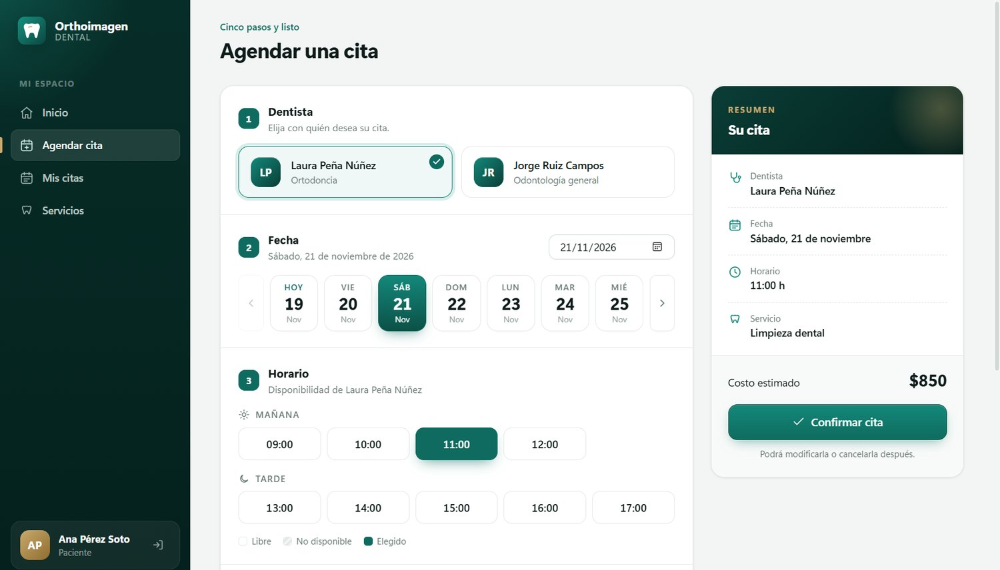
Guía paso a paso para pacientes nuevos y pacientes de siempre, recepción y dentistas.
Orthoimagen Dental es una aplicación de escritorio para Windows. No necesita instalar nada más.
| Requisito | Detalle |
|---|---|
| Sistema | Windows 10 o 11 de 64 bits. |
| Componente de pantalla | Microsoft Edge WebView2, que ya viene en Windows 11. Si la aplicación avisa que falta, descárguelo gratis desde el sitio de Microsoft. |
| Internet | No es necesario: todo funciona en la computadora de la clínica. |
Pacientes, citas y usuarios se guardan en la carpeta data, junto al archivo OrthoimagenDental.exe. Las contraseñas se guardan cifradas: nadie, ni siquiera recepción, puede leerlas.
data a una memoria USB o a la nube. Si algo falla, basta con volver a colocarla junto al .exe. No mueva el .exe sin su carpeta data: la aplicación crearía una base vacía.| Rol | Qué puede hacer |
|---|---|
| Paciente | Crear su cuenta, ver horarios libres, agendar, ver, modificar y cancelar sus propias citas, y consultar los servicios. |
| Recepción | Todo lo anterior para cualquier paciente, además de registrar pacientes, crear y restablecer accesos, filtrar la agenda y eliminar citas. |
| Dentista | Ver su jornada y su agenda día por día, y consultar los servicios. |
Siga la ruta que corresponda a su caso. Así no se duplica su expediente y conserva su historial.
Opción A: en la pantalla de acceso elija “Soy paciente nuevo” y cree su cuenta en un minuto (sección 3).
Opción B: llame o acuda a recepción; ahí lo registran y le agendan (sección 6.3).
No cree una cuenta nueva. Pida en recepción su acceso: le darán usuario y contraseña ligados a su expediente y conservará todo su historial (sección 6.5). Si intenta registrarse con el mismo teléfono, el sistema se lo indicará.
Escriba sus datos en “Iniciar sesión” y presione Entrar (sección 4).
Comuníquese con recepción. Le asignarán una contraseña nueva al momento; su usuario y sus citas no cambian (sección 6.5).
| Situación | Qué hacer | Sección |
|---|---|---|
| Quiero agendar y nunca he venido | Crear cuenta en “Soy paciente nuevo” | 3 |
| Llamo por teléfono por primera vez | Recepción me registra y agenda | 6.3 |
| Ya soy paciente, sin usuario | Pedir acceso en recepción | 6.5 |
| Tengo cuenta | Iniciar sesión | 4 |
| Olvidé mi contraseña | Recepción la restablece | 6.5 |
Regístrese una sola vez. Al terminar entra directamente y puede agendar su primera cita.
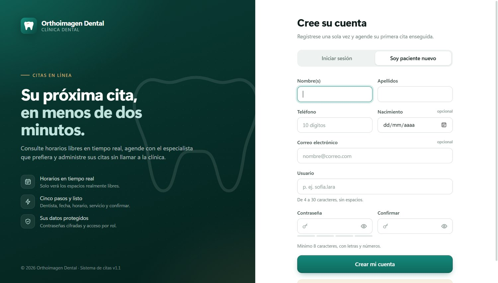
sofia.lara.| Dato | Regla | Ejemplo válido |
|---|---|---|
| Teléfono | Obligatorio, 10 dígitos. No puede estar registrado por otro paciente. | 477 123 4567 |
| Usuario | De 4 a 30 caracteres: letras, números, punto, guion o guion bajo. Sin espacios ni acentos. Debe estar libre. | sofia.lara |
| Contraseña | Mínimo 8 caracteres, con letras y números. | Sonrisa2026 |
| Correo | Opcional; si lo escribe, con formato nombre@dominio.com. | sofia@correo.com |
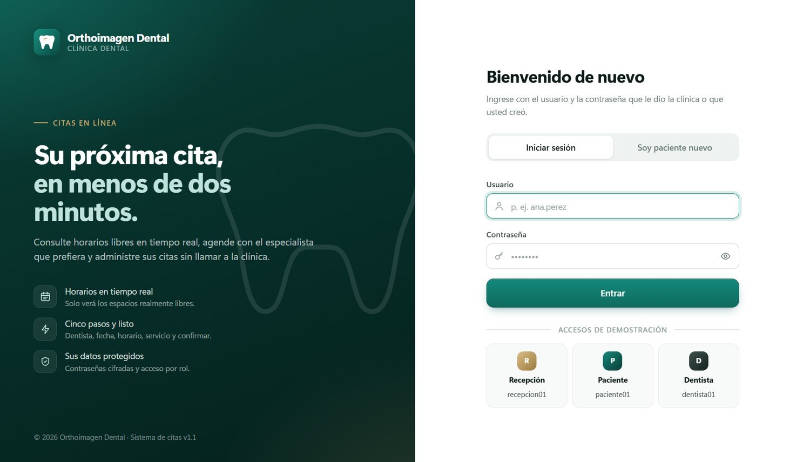
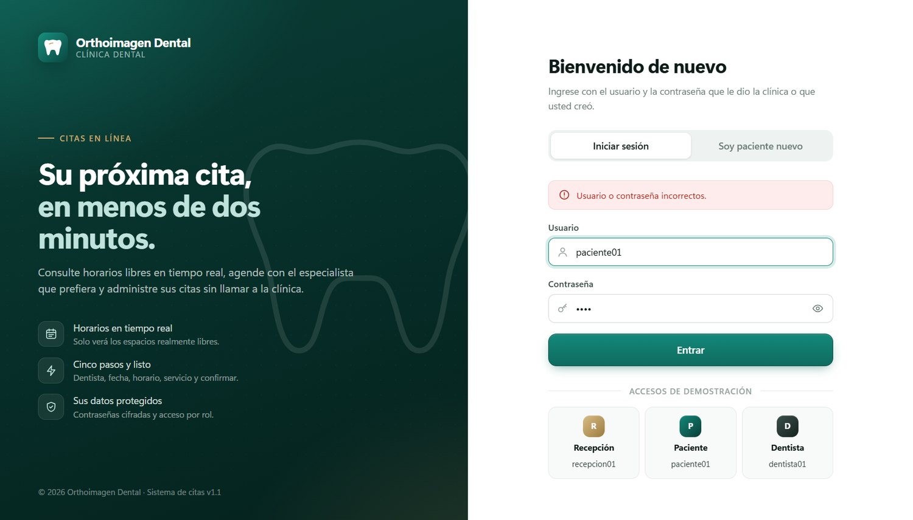
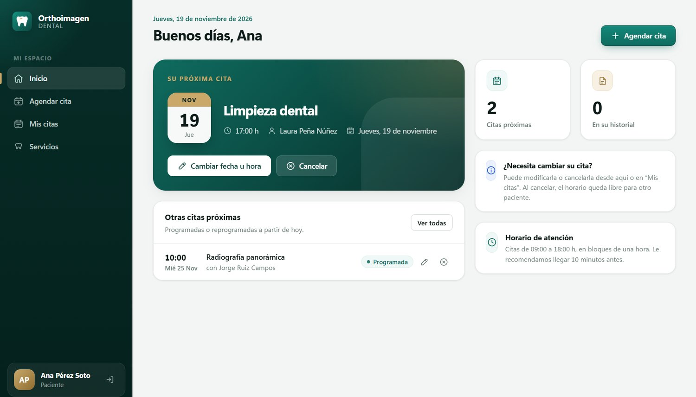
El menú de la izquierda tiene cuatro opciones: Inicio, Agendar cita, Mis citas y Servicios.
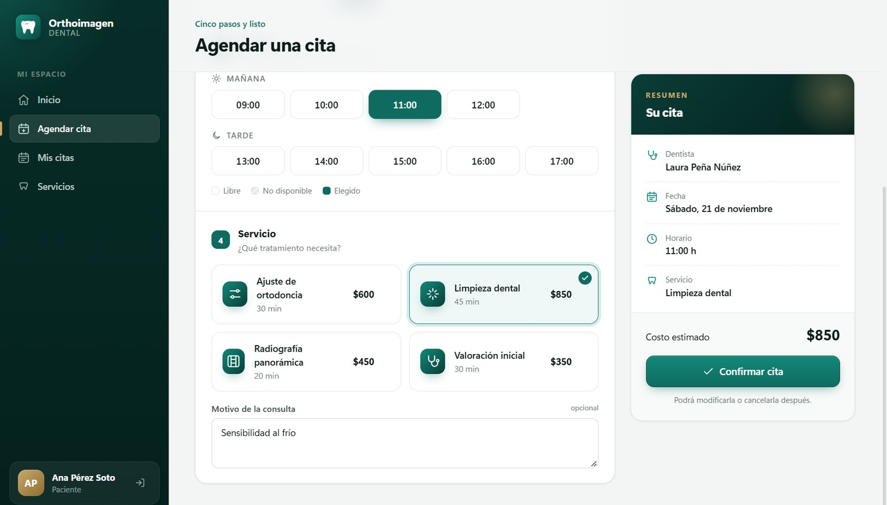
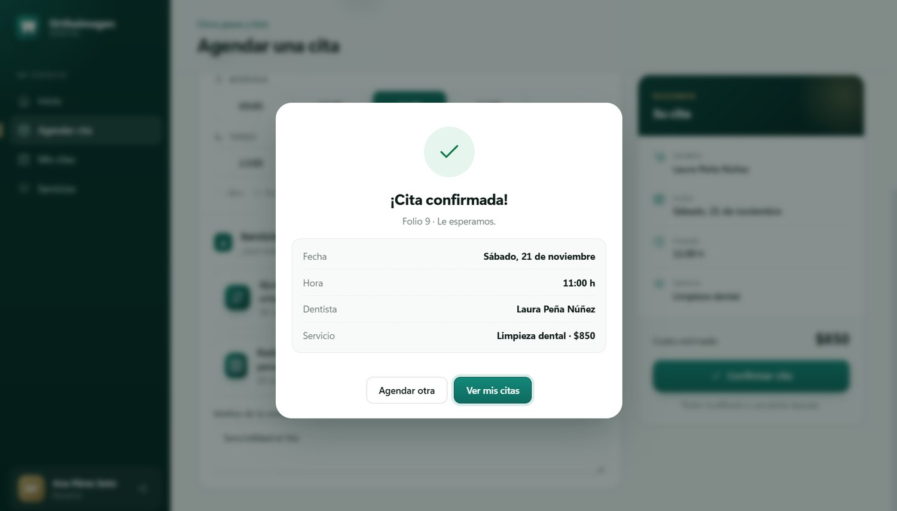
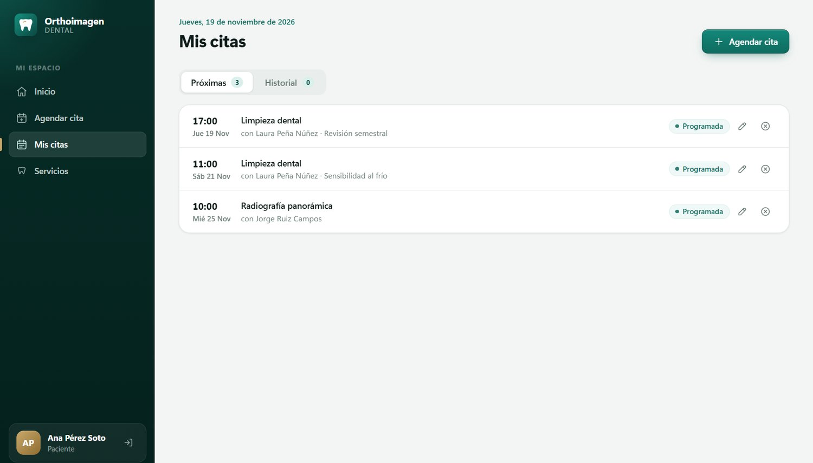
| Estatus | Significado |
|---|---|
| ● Programada | Cita registrada y vigente. |
| ● Reprogramada | Se cambió la fecha, la hora o el dentista. |
| ● Cancelada | Ya no se atenderá. Queda en su historial y el horario se liberó para otro paciente. |
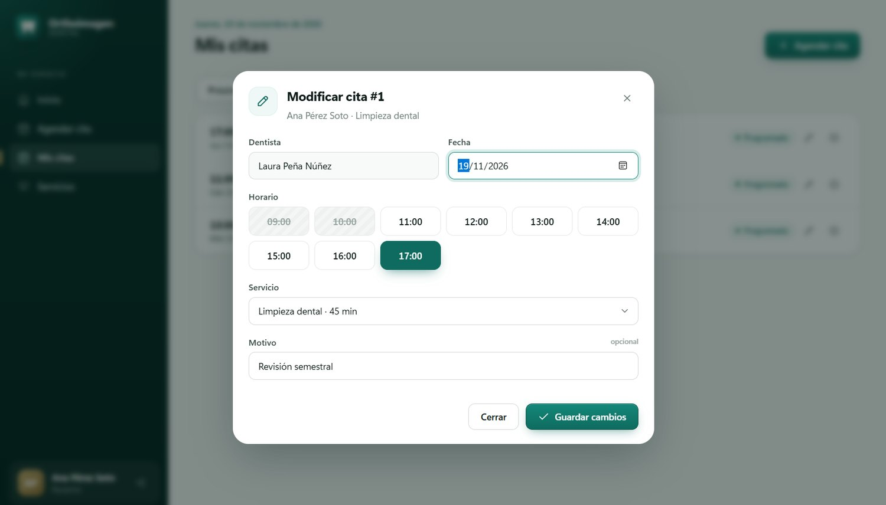
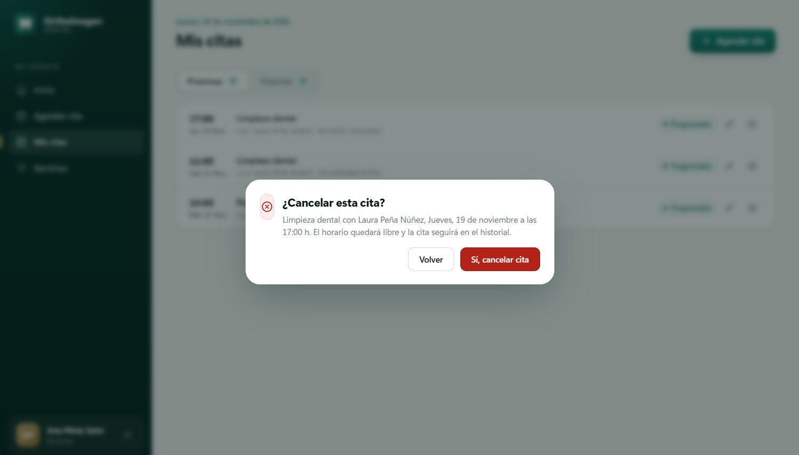
Presione el ícono ⊗ junto a la cita y confirme con Sí, cancelar cita. Si se arrepiente, presione Volver.
Una cita cancelada no se puede reactivar: agende una nueva. Si el horario sigue libre, puede volver a tomarlo.
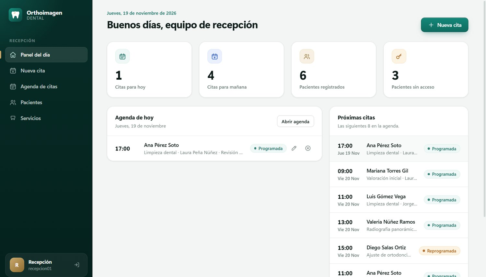
El indicador “Pacientes sin acceso” muestra a los clientes de siempre que aún no tienen usuario. Puede ofrecérselo cuando llamen (sección 6.5).
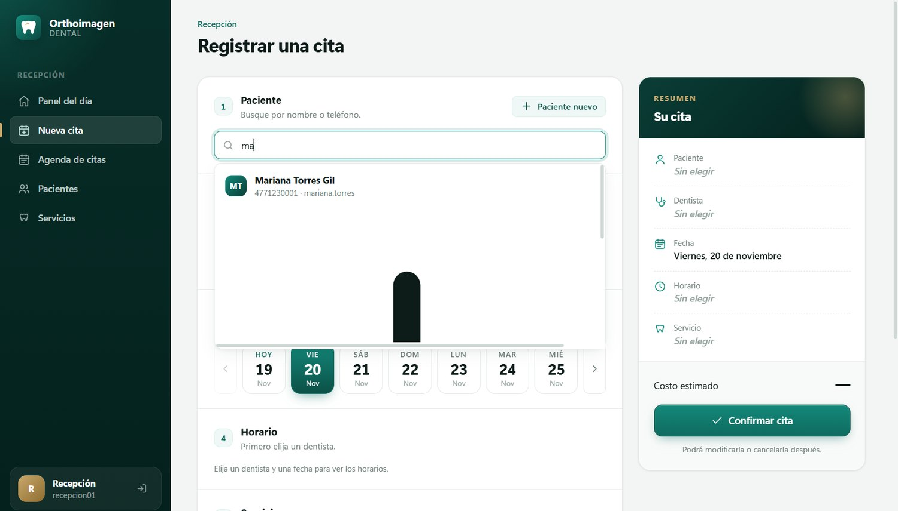
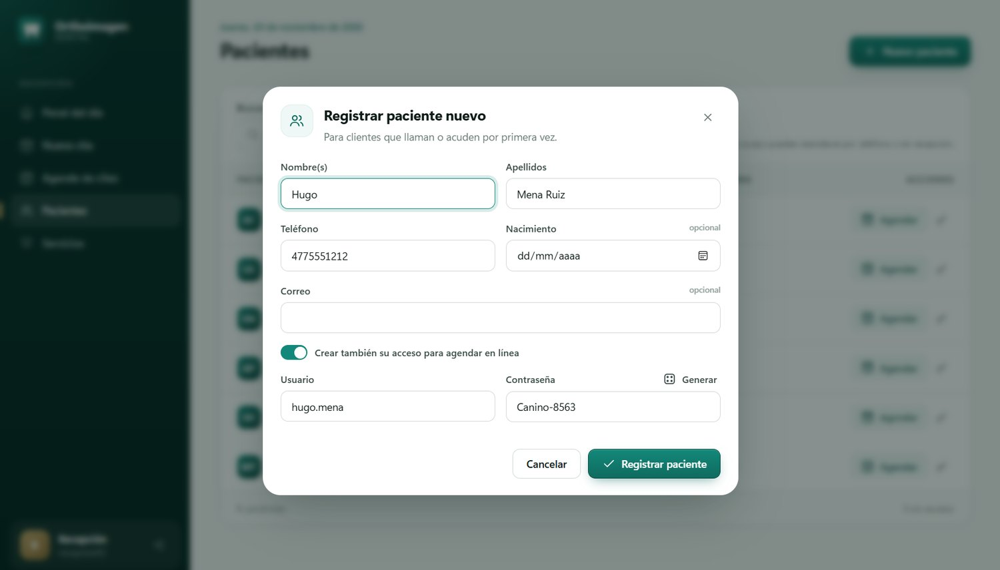
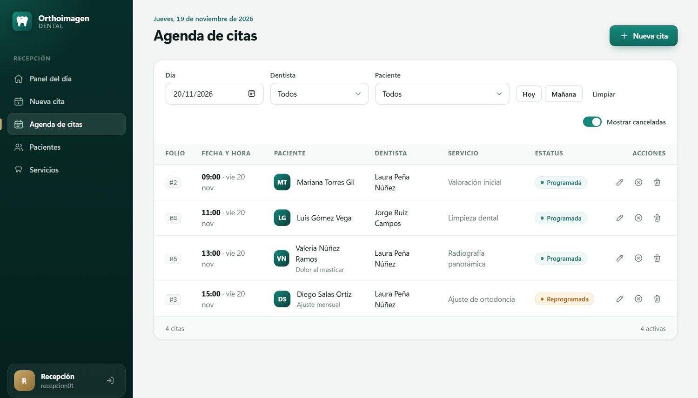
| Ícono | Acción | Cuándo usarla |
|---|---|---|
| Lápiz | Modificar | Cambiar fecha, hora, servicio, motivo o dentista. |
| ⊗ | Cancelar | El paciente avisa que no vendrá. La cita queda en el historial y se libera el horario. |
| Bote de basura | Eliminar | Solo para registros erróneos o duplicados. Borra la cita para siempre y no se puede deshacer. |
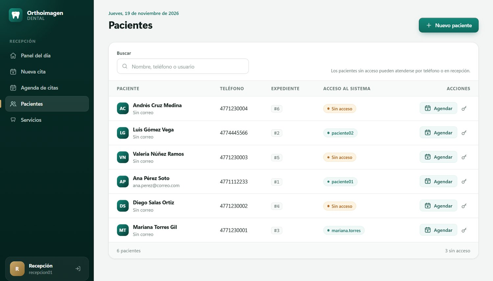
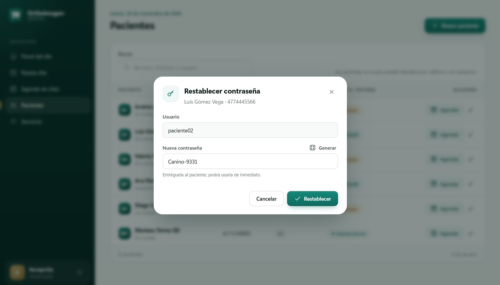
Cliente de siempre sin usuario: busque al paciente, presione el ícono de la llave, escriba el usuario y deje la contraseña sugerida (o genere otra). Presione Crear acceso.
Contraseña olvidada: con la misma llave, en un paciente que ya tiene usuario, se abre Restablecer contraseña. El usuario no cambia; la contraseña anterior deja de funcionar de inmediato.
El botón Agendar de cada fila abre “Nueva cita” con ese paciente ya elegido.
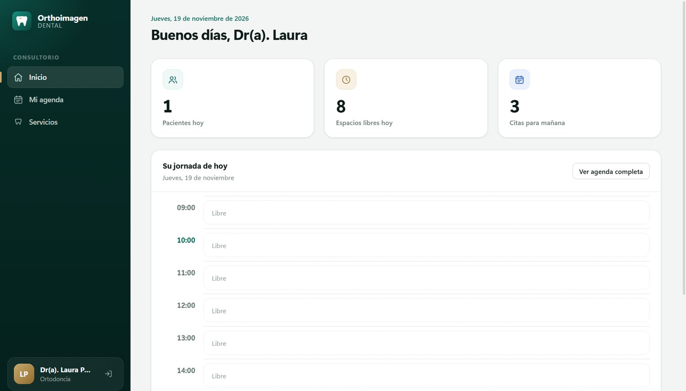
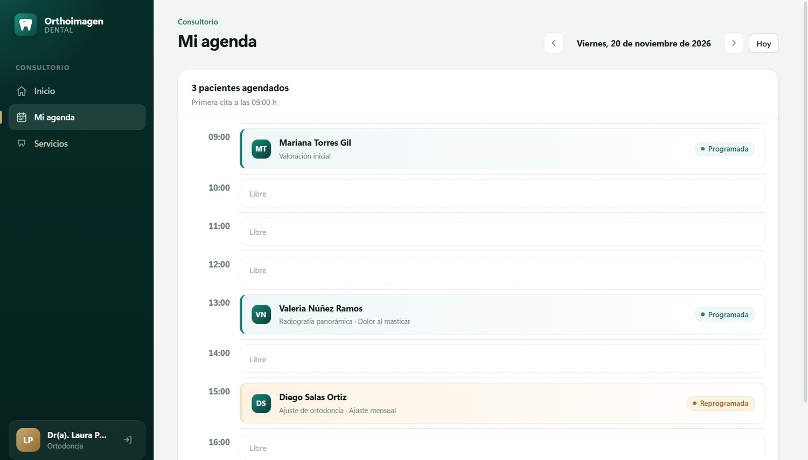
Cada bloque muestra al paciente, el servicio, el motivo y el estatus. Las citas ● Reprogramadas se marcan en ámbar para identificarlas rápido.
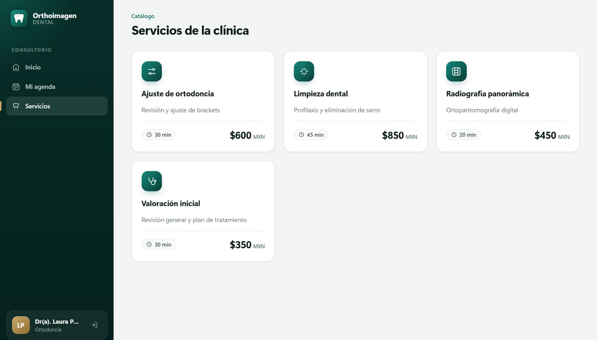
Todos los roles pueden consultarlo desde Servicios. Los precios son estimados; el costo final lo confirma la clínica.
Todos los mensajes aparecen en la esquina inferior derecha o dentro del formulario, con un color según su tipo.
| Tipo | Mensaje | Qué hacer |
|---|---|---|
| Error | El campo 'hora' es obligatorio. Por favor, complételo. | Elija lo que indica el mensaje (aquí, un horario). |
| Error | El horario seleccionado no está disponible. | Otra persona lo tomó: elija otro horario de la lista actualizada. |
| Error | Usuario o contraseña incorrectos. | Revise mayúsculas y minúsculas; si no recuerda su contraseña, llame a recepción. |
| Error | Ya hay un paciente registrado con el teléfono… | Ya es paciente: pida su acceso en recepción. |
| Error | La contraseña debe tener al menos 8 caracteres, con letras y números. | Agregue números o letras hasta cumplir la regla. |
| Error | No se pudo acceder a la base de datos. | Revise que la carpeta data esté junto al .exe y que no esté abierta en otro programa. |
| Aviso | El dentista no tiene horarios libres el… | Pruebe con otro día u otro dentista. |
| Listo | Cita registrada / modificada / cancelada… | La operación se guardó correctamente. |
Sí, en horarios distintos. Lo que el sistema impide es que un mismo dentista tenga dos citas a la misma hora.
Las citas inician cada hora, de 09:00 a 17:00 (la última termina a las 18:00). La duración aproximada de cada servicio aparece en el catálogo.
Una cita cancelada no se reactiva. Agende una nueva; si el horario sigue libre, puede elegirlo otra vez.
No desde la aplicación. Si lo necesita, recepción puede registrarle un acceso nuevo.
Usted ve solo sus citas. Recepción ve los datos necesarios para atenderle y cada dentista ve únicamente su propia agenda. Nadie puede ver su contraseña.
Nada se pierde: todo se guarda en el momento. La próxima vez que la abra, tendrá que iniciar sesión otra vez.
| Usuario | Contraseña | Rol |
|---|---|---|
paciente01 | Paciente#2026 | Paciente (Ana Pérez Soto) |
recepcion01 | Recepcion#2026 | Recepción |
dentista01 | Dentista#2026 | Dentista (Laura Peña Núñez) |
Orthoimagen Dental · Sistema de citas versión 1.1 · Desarrollo de Aplicaciones y Servicios Virtuales, Universidad Iberoamericana León · Matias Ochoa Tirado y Mateo Javier Ortega Fernández.